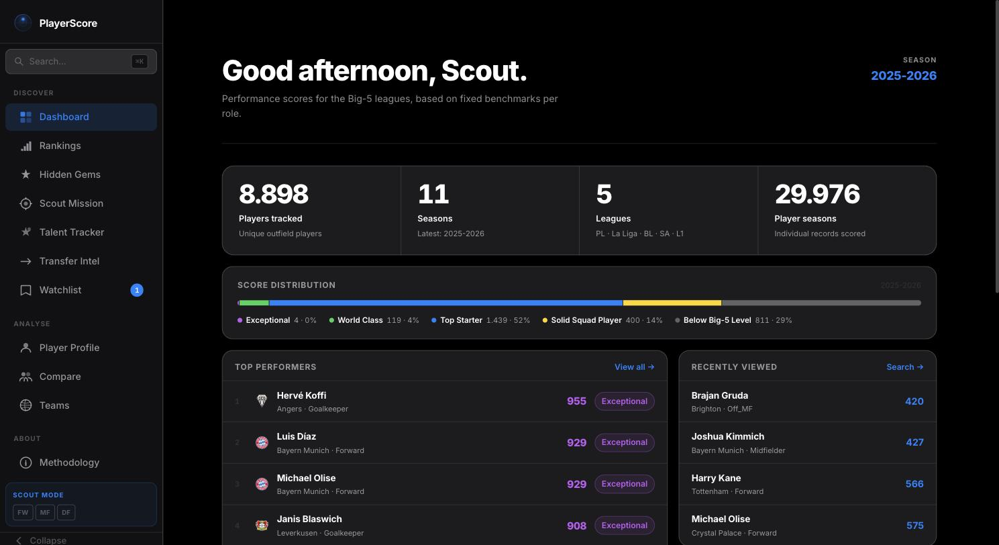

Hi, I'm
Stefan Hofmann
I spent 15 years as an engineer across Europe. The last two I have been fully focused on data analytics. I build things with Python, SQL, and AI tools, and I care about making data useful for the people who need to act on it. Based in Barcelona.
About
Data Analyst with 15+ years of engineering experience, now fully focused on analytics and AI-assisted workflows. My engineering career was built around analysing process data, translating technical findings into decisions, and making complex information accessible to non-technical stakeholders across international teams.
That way of thinking carried over directly into data work. One of my recent projects is PlayerScore — a football analytics platform covering 6,800+ players across 9 seasons of Big-5 league data, built end-to-end in Python with a deployed Streamlit frontend. I also integrate AI tools deeply into how I work, using Claude Code daily for development and LLM APIs for data automation.
Based in Barcelona. Fluent in German, English, and Spanish.
Projects

PlayerScore
Fully automated football analytics platform covering 9 seasons of Big-5 league data. FIFA-style player cards, pizza charts, recruitment views, and a similar-player finder — all powered by a weekly CI/CD pipeline via GitHub Actions.
Experience
Development Engineer
MAN Energy Solutions (via ALTEN) · Barcelona
- Managed 50+ projects with more than 97% on-time delivery, coordinating cross-functional stakeholders across time zones from discovery through delivery.
- Led global rollout of requirements management software (REQMAN), managing a 4-person team, driving adoption across stakeholders in multiple international business units, and reducing bid management effort by 20 to 30%.
- Acted as the interface between business requirements and technical execution across engineering, IT, and analytics teams.
Lead Project Engineer
BORSIG GmbH · Berlin
- Owned client relationships for 2 to 3 technical projects per year (300k to 1M EUR), managing the full commercial and technical lifecycle from requirements scoping through delivery and post-project expansion.
- Built and pitched data-driven business cases to non-technical decision-makers, securing buy-in for projects delivering 5 to 10% cost and efficiency improvements to the client.
- Led cross-functional teams of up to 15 people across client and internal organisations in multiple European countries.
Senior Commissioning Engineer
MARTIN GmbH · Munich
- Commissioned approximately 10 large-scale plants across Europe, coordinating contractors and client stakeholders through full project lifecycle in multiple countries.
Skills
Languages
Machine Learning
Databases
Data Engineering
Visualisation
DevOps & Tools
Sports Data
Generative AI
Education & Certifications
B.Eng., Process & Environmental Engineering
University of Applied Sciences, Berlin
Data Science Bootcamp
Excel · SQL · Python · ML · Tableau · Docker · Git — Rappert Technologies
Google Data Analytics Professional Certificate
SQL · Python · Tableau · Data preparation, analysis & visualisation — Google / Coursera
Hudl Academy Certifications
Analyst Academy CORE · Wyscout Advanced Workflows · EPTS Technology Application Level 1 — Hudl
Sport Analytics — The Art of Communicating Data
Barça Innovation Hub
Contact
Open to new opportunities in data science and analytics. Let's talk.